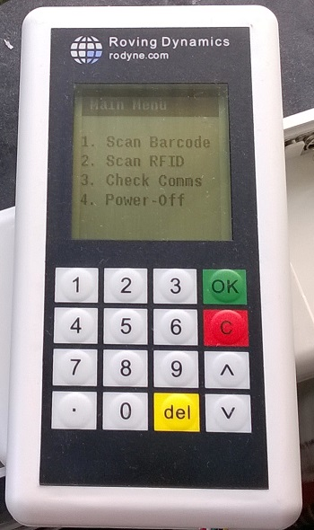
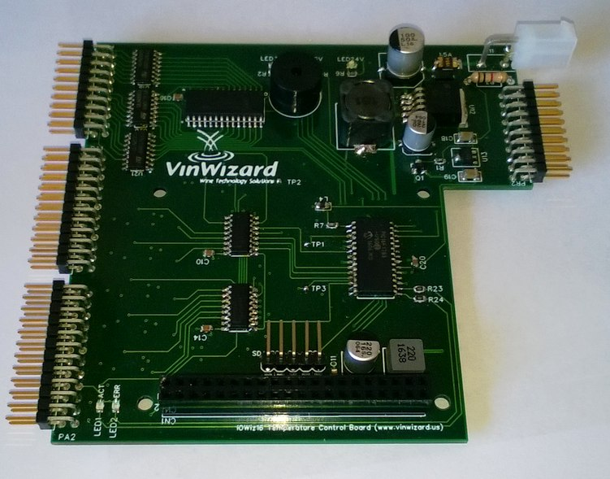

A lot of companies would like to add ‘intelligence’ to their products, and many people know exactly what they want but are put off by the feared potential costs of something they know nothing about or dread having to deal with unknown electronics engineers in another part of the world.
Those that go down the path of adding electronic functionality to their system usually resort to shoe-horning some existing device into a role it was not intended to do, using a PLC which may be total overkill, or throwing something together with an Arduino or Raspberry Pi; While these solutions may work fine for prototypes or one-off devices, they may not work in a rugged industrial environment, nor look very professional, nor produce the lowest buy/support costs should you require multiple units.
Custom electronics can add a lot of value to your existing products for a small outlay. Below is a cost/benefit sketch I produced for a frost windmill and alarm. The initial customer idea was to make 50 controllers, the cost of development was around $3500 and so this would have equated to around $70 for each control board. After a realistic check of the market the customer cut that figure down to just 6 (I kid you not!) this worked out at $625 per board! Of course it worked out cheaper for them to use a simple PLC for $350 each and I recommended they do this if cost was the only option. Costs were from 2008 but have not changed much in 2025 as the increased price of labour has been offset by the decreased cost of making the units.
However, the motto’s from the above exercise is clear:
- It pays to be realistic in your Qty estimates
- It pays to do the math (as sometimes a PLC or a Development board is what you want)
- It pays to create custom electronics once you reach a certain threshold usually around 10-20 units or if you believe there is a realistic onward sales possibility.
- Factor in spares and support! While PLC’s are very reliable, they are just using the same microcontrollers I use in my designs, and need spares; if the only PLC spare is with one remote supplier or the PLC goes end of life and your running a production system you wont be doing anyone a favour by not having a spare or two!
- End-of-Life is an issue for all bought in parts. When you own the IP however this end-of-life is more determined by you and not a third-party and owning the IP makes it easy to offset for any individual component going end-of-life.
In Summary

Examples where custom electronics may be an option.
- Temperature sensors to switch your systems on or off or reduce there power depending upon the temperature or the rate of change of temperature.
- Light sensors changes to do the same for when it is light or dark
- Interlocks to ensure mechanisms are in place, before allowing systems to operate.
- Capturing run data such as operational times for equipment or plant not connected to PLC’s or where PLC’s are un-affordable.
- Remotely controlling your equipment or having it report to you regularly using wire, radio, GSM/SMS or Internet links
- Spicing up your control panel with LCD display or enabling PC control of your systems (Many customers now expect to be able to control and monitor devices from SCADA or PC’s)
- Replacing unreliable mechanical controls
- Fault monitoring (combine data from multiple sensors and have the electronics make an intelligent decision or display the fault ‘in plain English’ to the user)
- Adding features to your product eg start widget A 10 seconds after valve B closes, every other Sunday!
- Etc, etc
Example Project
16 Temperature Channel, 34 Relay Driver 4-layer double-sided control board (Hand-built Prototype below)

This was developed at the end of 2016 for Wine Technologies and I worked through the design with the company over 4 iterations of hardware and firmware until it met their exact requirement. The design and prototyping cost around $5000 and 100 boards were made at a cost of $50 each so the total cost of the project was $10000/100 or $100 per board. The company has all the design files and firmware and got several free lessons in C and electronics engineering included. The above is a quite complicated board (you cannot see the 12 analog multiplexers, op-amps and DAC circuitry on the back) a much simpler project prior to this for them was two layer and worked out at $45 each amortised over the project.
The advantage is they own the finished product, not just the hardware but all the design files and firmware and if they choose they can work direct with the manufacturers or other engineers and manufacture/licence as many as required.
Further boards can be made to keep spares on customer sites at minimal costs to them and increased up time to their customers (not that many have failed of course!)

Creating your own custom electronics design would have been out of the reach of all but the largest companies several years ago. However the technology game is a fast moving one and you can now design, build and test these systems using electronic CAD systems without touching a soldering ironing giving the ability to create a working prototype in just a few hours. (The Arduino board is a great example of such a prototyping system) Once your happy with the prototype systems you can generate the schematic/pcb/CAM (Computer aided Manufacture) files to allow mass production at low cost (there are a sea of suppliers just waiting for these orders!). Reliability will be measured in years, power consumption in mA and you can have as many low cost spares as you want giving you years of peace of mind for support.
For a very small controller, say a HRV control box which sticks on your wall and controls a ventilation fan in the attic, it will have a few keys, an lcd display a temperature sensor, a few discrete components and a triac or relay to switch a motor, it would be easy to produce the finished electronics including enclosure for under US$20 for 500 qty, ($15 for parts and $5 per unit amortised development cost – Yes I have analysed one for a potential rival!) Also remember a PLC is nothing magic it is just a piece of custom electronics with very robust I/O. It is a black box, ie you have no idea of the insides or what makes it tick outside of its development system. With custom electronics you get everything so it can be repaired or modified as required and you can build as much or as little user programmability into the devices you want, from no controls at all to a full control panel or remote control via MODBUS, Bluetooth, WEB or even a custom PC program.